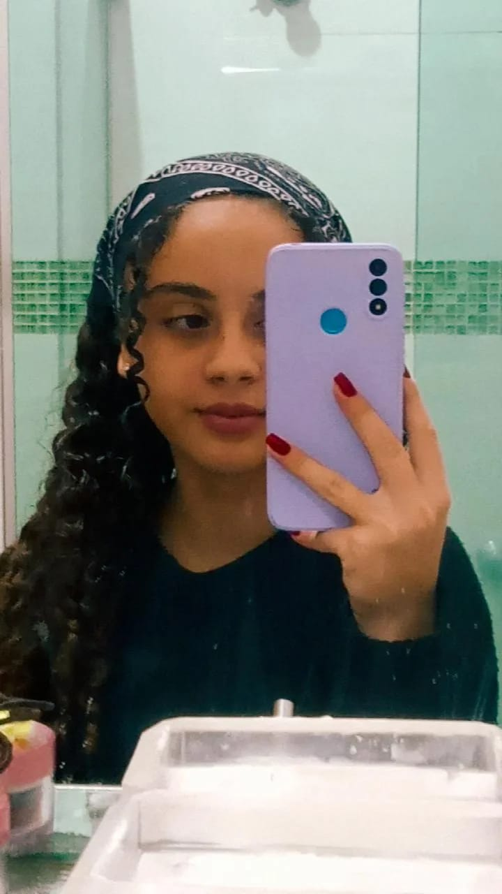

Resumo de cada coisa aprendida.
Olá meu nome é Sofia Padovan Silva, tenho 14 anos. Nasci 19/07/2008 em Bebedouro-SP e moro aqui. Estudo na escola Etec Prof.Idio Zucchi, estou no curso de infomática e tenho ghostado bastante. Gosto muito de passar tempo de qualidade com minha família e amo jogar bola. Sonho em um dia conhecer a Europa e ver neve pela primeira vez. Minhas cores preferidas sem dúvidas é roxo e azul. Outra coisa que amo é ir na florecultura. Esse ambiente me traz paz e tranquilidade. Gosto muito também de cozinhar, não sei muita coisa ainda, mas modesta parte faço um bolo delicioso.